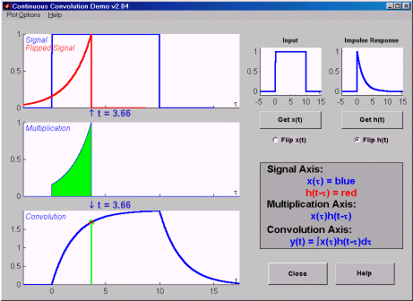

|  |
The Continuous Convolution Demo is a program that helps visualize the process of continuous-time convolution. Features:
- Users can choose from a variety of different signals.
- Signals can be dragged around with the mouse with results displayed in real-time.
- Tutorial mode lets students hide convolution result until requested.
- Various plot options enable the tool to be effectively used as a lecture aid in a classroom environment.
|